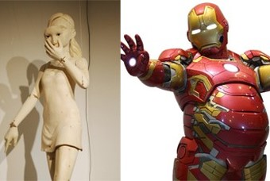

주제별 캐스트
-
공연전시
'슬의' 투머치 패션의 그 의사…알고보니 연극·뮤지컬 무대에서 활약
한예종 10학번 '트로이카'라고 불린 배우들이 있습니다. 2012년 영화 '은교'로 데뷔해 재학 중에 이미 스타가 된 김고은과 그 뒤를 이어 나란히 신인여우상을 휩쓴 이유영과 박소담. 세 사람은 이제 영화계의 기대주에서 '믿고 보는 배우'로 성장했습니다.그리고 세 사람의 뒤를 이어 새롭게 떠오르는 한예종 10학번 동기가 한 명 더 있는데요. 오랜 시간 뮤지
1주일 전 비하인드체크 -
공연전시
'디즈니 동화' 속 공주들의 메이크업을 현실로 재현하면 벌어지는 일
[인사이트] 박수은 기자 = 꿈의 나라 디즈니 애니메이션 속 공주님을 꿈꾸며 자란 이들은 여기 주목하자. 라푼젤부터 알라딘의 자스민, 인어 공주의 에리얼, 그리고 미녀와 야수의 벨과 신데렐라까지. 애니메이션을 찢고 나온 듯한 디즈니 동화 속 공주 캐릭터 커버 메이크업을 소개한다. 최근 국내외 온라인 커뮤니티 상에는 중국의 한 여성이 디즈니 애니메이션 캐릭터
어제 인사이트 -
공연전시 한국인에게 친숙한 밀레의 '만종' 알고 보면 숨겨진 비밀이?!
레오나르도 다빈치의 '모나리자', 미켈란젤로의 '천지창조' 등 세계적으로도 유명하고 또 우리에게도 친숙한 예술 작품들. 그중에서도 유독 한국인의 정서에도 걸맞는 작품도 떠오르는데 그중 하나가 바로 장 프랑수아 밀레의 '만종'이라는 작품이에요. '만종' 이 들려주는 이야기와 우리에게 왜 이토록 가깝게 느껴지는지, 그리도 또 ...
22시간 전 공감 -
공연 BEST
디즈니 본사도 인정한 한국 뮤지컬 배우들의 OST 더빙 실력
요즘 집에 있는 시간이 많다 보니 밀린 영화 다시 보는 분들 많으실 텐데요. 복잡하게 생각하면서 볼 필요 없고 마음이 따뜻해지는 영화로 디즈니 영화만 한 게 또 없죠. 디즈니 영화하면 영화를 더 빛나게 해주는 주옥같은 OST들도 빼놓을 수 없습니다. 오리지널 버전 OST가 인기를 얻으면 우리나라 더빙 버전도 덩달아 주목받곤 했는데요. 원작 못지않은 뛰어난
1주일 전 네이버 공연전시
-
공연 BEST
드라마 속 그 노래! 유명 OST 부른 뮤지컬 배우는 누구?
드라마가 인기를 얻으면 덩달아 주목받는 게 있습니다. 바로 드라마 OST인데요. 드라마에 삽입되어 극의 분위기에 맞는 멜로디와 가사로 스토리를 보조하고, 시청자들로 하여금 더 풍부한 감정 이입이 가능하게 만들죠. OST가 좋으면 자연히 누가 불렀는지도 궁금해지기 마련인데요. 주로 대중가요 가수들이 부르는 경우가 많지만, 뮤지컬 배우가 드라마 OST 보컬로
2주일 전 네이버 공연전시 -
공연 BEST
베토벤보다 인기 많았던 로시니, 은퇴 후 '음식 연구가' 된 이유
로시니의 쿠킹 클래스에 초대합니다!글｜정은주·클래식 음악 칼럼니스트정은주의 클래식 수다 쉽고 가볍고 즐거운 클래식 음악 이야기를 나눠요맛있는 음식을 좋아하는 사람은 맛있는 음식을 먹을 기회가 더 많아지는 법이란다.- 애니메이션 <우리의 계절은> 1편 ‘따듯한 아침식사’, 할머니와 샤오밍의 대화 中 -우리는 태어나 죽는 날까지 식사를 합니다. 누구나 매.
6일 전 올댓아트 -

전시 BEST
태권브이부터 아이언맨까지…당신에게 '로봇'은 어떤 의미인가요?
■ 로봇 아트 팩토리(Robot Art Factory)'빰빠라람빠빠빠' 신나는 전주에서 "달려라 달려, 로보트야. 날아라 날아, 태권 브이"로 시작되는 영화 <로보트 태권V>는 TV 만화 <마징가 제트>와 함께 7080 세대의 어린 시절 양대 산맥을 이룬 만화 중 하나다. 외모 콤플렉스로 인해 악당이 된
1주일 전 네이버 공연전시 -
전시 BEST
이게 다 어디야? 세계에서 가장 아름다운 건축물들
Agora’s #Architecture2020 photo competition'Agora'에서 주최한 '#Architecture2020' 사진 콘테스트의 결선 진출 작품들이 공개되었습니다. 세계에서 가장 아름다운 건축물 사진을 겨루는 이번 콘테스트는 약 10,300 여장의 사진이 출품되어 상위 50장의 사진이 최종 결선 진출에 성공할 수 있었습니
1주일 전 아이디어 래빗
공연전시 판의 컨텐츠는 ㈜아티션에 의해 운영·편집 됩니다.